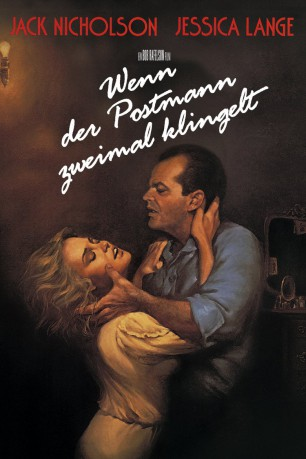
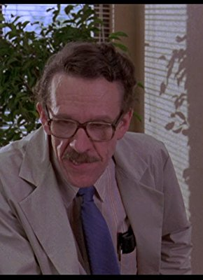

#4312 Wenn der Postmann zweimal klingelt
Alternativ: The Postman Always Rings Twice
 
 IMDB-Wertung: 6.6 / 10
IMDB-Wertung: 6.6 / 10  Metascore: 0
Metascore: 0 
Der Vagabund Frank Chambers zieht im Amerika der Depressionszeit durch Kalifornien, nimmt einen Job in der Raststätte John Colicos an und hat eine Affäre mit dessen Frau Cora. Da ihr einziges Problem Coras Mann ist, fassen die beiden bald den Entschluß, ihn zu beseitigen. Sie versuchen, die Tat als Autounfall zu tarnen, werden aber dennoch des Mordes verdächtigt. Dem geschickten Anwalt Katz gelingt es, sie herauszupauken, und als sich herausstellt, daß Cora schwanger ist, heiraten sie. Kurz darauf haben sie jedoch selbst einen Autounfall, bei dem Cora ums Leben kommt.
Jahr: 1981
Dauer: 121 Minuten
FSK: 16
Land: USA Studio: CBSTonspuren: DD5.1 - ,
Untertitel:
Auflösung: 1080p (1920x1080) Größe: 9850 MB
Genre: Krimi, Drama, Thriller, Liebe
Regisseur: Bob Rafelson
Drehbuch: John Davies
Soundtrack:
Darsteller:
 Jack Nicholson als Frank Chambers
Jack Nicholson als Frank Chambers Jessica Lange als Cora Papadakis
Jessica Lange als Cora Papadakis John Colicos als Nick Papadakis
John Colicos als Nick Papadakis Michael Lerner als Mr. Katz
Michael Lerner als Mr. Katz John P. Ryan als Kennedy
John P. Ryan als Kennedy Anjelica Huston als Madge
Anjelica Huston als Madge Jon Van Ness als Motorcycle Cop
Jon Van Ness als Motorcycle Cop Don Calfa als Goebel
Don Calfa als Goebel Sam Edwards als Ticket Clerk
Sam Edwards als Ticket Clerk- Joni Palmer als Granddaughter
 Ron Flagge als Shoeshine Man
Ron Flagge als Shoeshine Man Brion James als Crapshooter
Brion James als Crapshooter Virgil Frye als Crapshooter
Virgil Frye als Crapshooter Glenn Shadix als Twin Oaks Customer
Glenn Shadix als Twin Oaks Customer Christopher Lloyd als The Salesman
Christopher Lloyd als The Salesman- James P. Axiotis als Himself - Dancer , uncredited
 Chuck Liddell als Boy Scout , uncredited
Chuck Liddell als Boy Scout , uncredited- William Traylor als Sackett
- Thomas Hill als Barlow
- Brian Farrell als Mortenson
- Raleigh Bond als Insurance Salesman
-  William Newman als Man from Home Town
- Albert Henderson als Art Beeman
- Ken Magee als Scoutmaster
- Eugene Peterson als Doctor
- Louis Turenne als Ringmaster
- Charles B. Jenkins als Gas Station Attendant
- Dick Balduzzi als Sign Man #1
- John Furlong als Sign Man #2
- Betty Cole als Grandmother
- Lionel Mark Smith als Crapshooter
- Frank Arno als Crapshooter
- Kenneth Cervi als Crapshooter
- Chris Rellias als Greek Party
- Theodoros A. Karavidas als Greek Party
- Basil J. Fovos als Greek Party
- Nick Hasir als Greek Party
- Demetrios Liappas als Greek Party
- James O'Connell als Judge
- William H. McDonald als Bailiff
 Elsa Raven als Matron
Elsa Raven als Matron- Kopi Sotiropulos als Greek Mourner
- Tom Maier als Twin Oaks Customer
- Tani Guthrie als Twin Oaks Customer
- Carolyn Coates als Twin Oaks Customer
- Jim S. Cash als Twin Oaks Customer
- Morgan Blanchard als Boy Scout , uncredited
- Luther Fear als Jailer , uncredited
Datei: X:\1981\Wenn der Postmann zweimal klingelt (1981, FSK16, 1920x1080).mkv seit 05.09.2016
Festplatte: HD 1980-1986
 Es gibt insgesamt 33 Filme in der Gruppe '1981'
Es gibt insgesamt 33 Filme in der Gruppe '1981'